本项目承接实验一的需求分析，设计并建模一个基于 Web 的酒店预订系统，旨在解决传统酒店预订信息不透明、高峰期人工改价与对账效率低、无房或库存冲突易产生纠纷等问题。系统面向顾客、前台服务人员、平台管理员三类角色，实现多角色权限分明、每日库存与价格灵活维护、多条件检索、连住跨日校验、订单 15 分钟超时自动释放、并发防超卖、线下核销与经营统计等能力，最终形成结构完整、可供后续工程师实现的高保真原型。
依据高内聚、低耦合原则，将系统划分为五个业务功能模块与一个系统支撑模块（共六个模块），完整覆盖实验一需求分析报告中的全部基本要求模块：
| 模块 | 职责 | 主要需求 |
|---|---|---|
| 用户权限模块 | 三类用户的注册、登录、身份鉴权与权限分配 | REQ-001、REQ-014 |
| 酒店资源模块 | 酒店、房型、每日库存与价格、停售状态维护 | REQ-002 |
| 搜索查询模块 | 多条件检索房型与实时价格、空结果处理 | REQ-003、REQ-013 |
| 订单支付模块 | 跨日校验、下单锁库存、支付、超时释放、批量退款 | REQ-004~REQ-008、REQ-010、REQ-011 |
| 核销与报表模块 | 前台核销退房、经营数据统计与异常日志 | REQ-009、REQ-012 |
| 系统支撑模块 | 并发锁、异常日志、短信通知、数据库每日定时备份与故障告警 | REQ-015 |
系统整体采用分层架构：表示层（顾客端界面与管理后台界面）通过 HTTPS 访问业务逻辑层；业务逻辑层由认证、搜索、库存、订单、支付、超时调度、核销、报表、通知等组件构成；数据统一持久化到业务数据库，并对接第三方支付网关与短信网关。采用分层与组件化设计的原因是：各层职责单一、便于并行开发与独立测试，业务组件可复用、易扩展，且能通过组件边界清晰落实权限与并发控制，降低后续实现的耦合度。下面按结构性图、行为性图、交互性图三类分别给出。
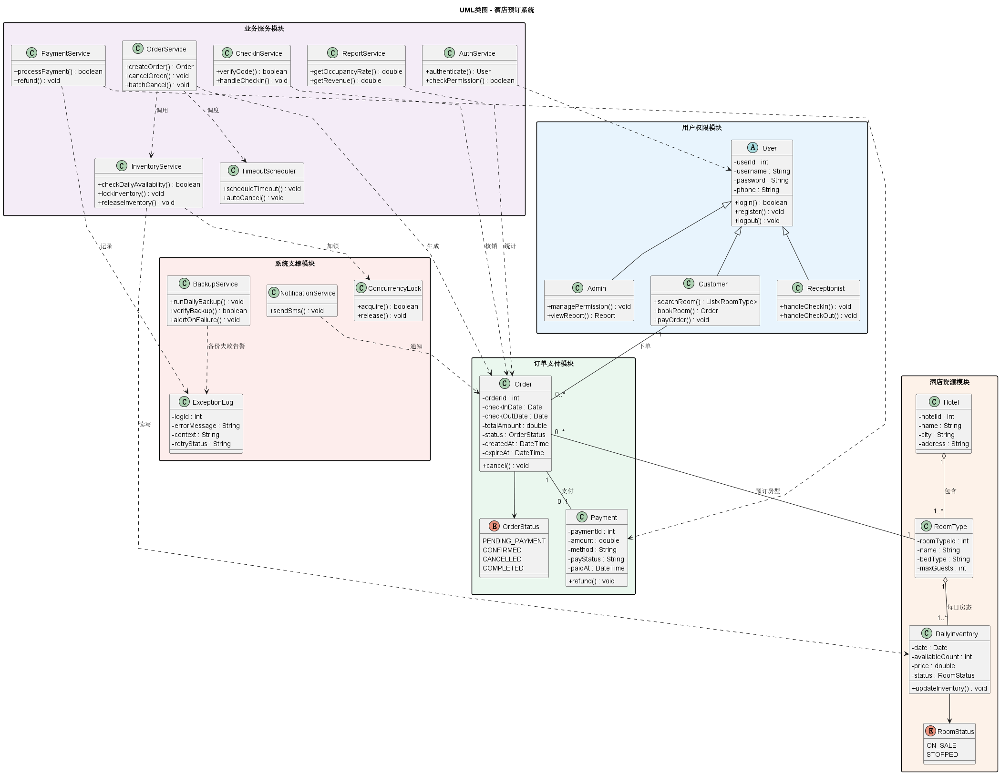
类图以五个包组织系统的核心类，描述其属性、方法与关系，并与上述功能模块相互呼应。设计要点：
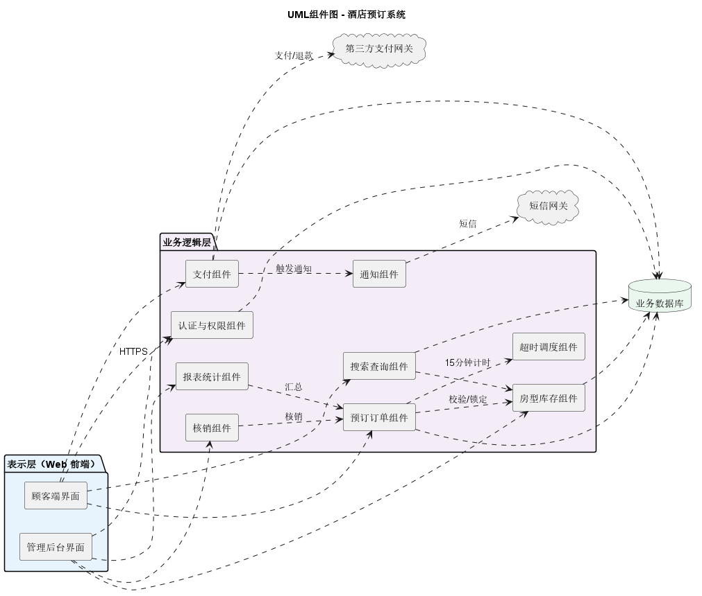
组件图从部署与依赖角度刻画模块划分。表示层的顾客端界面与管理后台界面分别调用业务逻辑层的不同组件；预订订单组件依赖房型库存组件完成校验与锁定、依赖超时调度组件维护 15 分钟计时；支付组件对接第三方支付网关并通过通知组件经短信网关发送消息；各业务组件统一读写业务数据库。这样设计使组件间仅通过明确接口依赖，替换或升级任一组件（如更换支付网关）不影响其他组件。
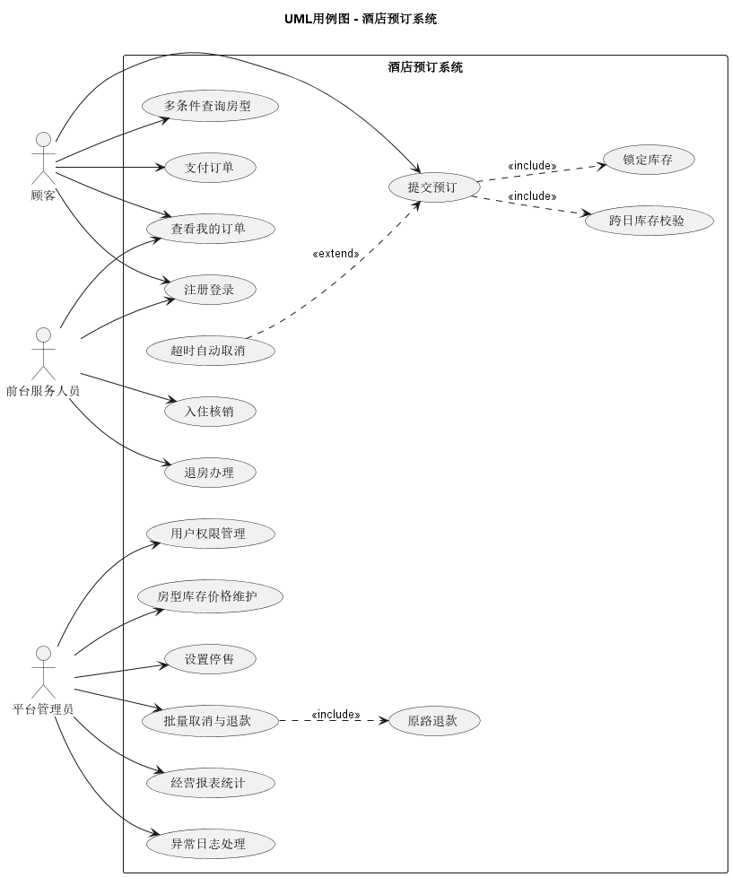
用例图描述三类参与者与系统功能的交互边界。顾客可执行注册登录、多条件查询、提交预订、支付订单、查看订单；前台服务人员可执行入住核销与退房办理；平台管理员可执行权限管理、房型库存价格维护、停售、批量取消退款、报表统计与异常日志处理。图中“提交预订”包含（«include»）“跨日库存校验”和“锁定库存”，“超时自动取消”作为扩展（«extend»）用例在超时条件下触发，“批量取消与退款”包含“原路退款”，从而清晰表达功能的强制步骤与条件分支。
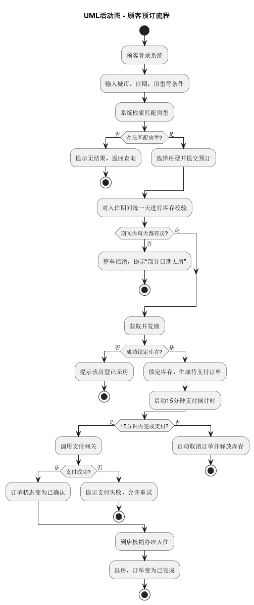
活动图刻画顾客预订的完整工作流与关键决策点：检索后判断是否存在匹配房型；提交后对入住期间逐日校验，任一天无房即整单拒绝；获取并发锁失败则提示无房，成功则锁定库存并生成待支付订单、启动 15 分钟倒计时；超时未付自动取消并释放库存，支付成功则订单转为已确认，最终到店核销、退房后变为已完成。该流程将跨日整单拒绝、防超卖、超时释放等核心业务规则显式化，便于后续实现时对照。
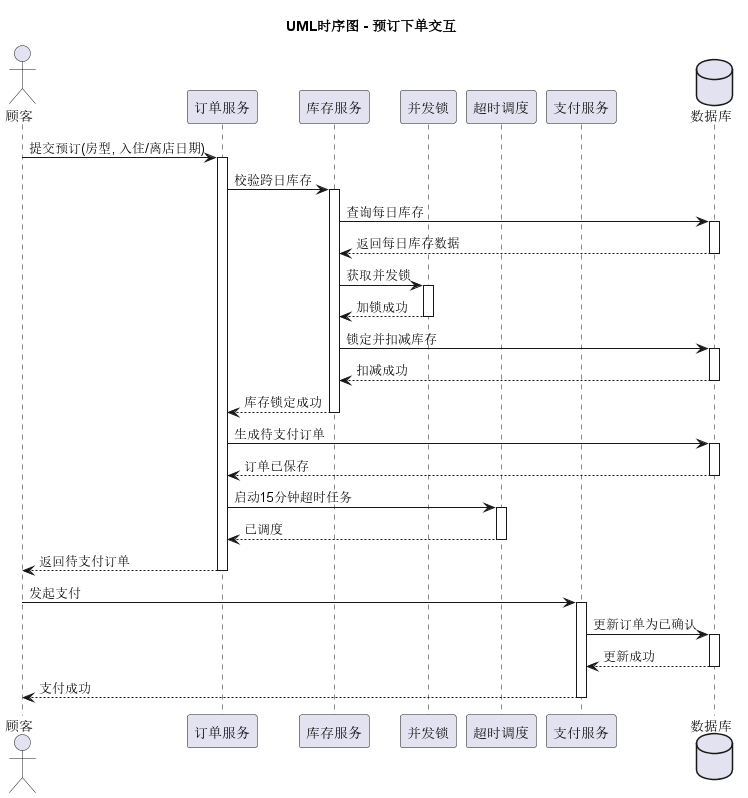
时序图按时间顺序展示“预订下单”场景中各对象的消息往返与生命周期：顾客向订单服务提交预订，订单服务请求库存服务校验跨日库存；库存服务先查询数据库、再获取并发锁、锁定并扣减库存，随后返回结果；订单服务生成待支付订单、调度 15 分钟超时任务并返回顾客；顾客发起支付后，支付服务更新订单为已确认。通过激活条与返回消息可明确调用次序与责任归属，避免实现时出现库存先扣后校验等逻辑倒置。
依据 UML 图中的模块划分，为各功能模块设计 7 个 Web 界面，统一采用蓝白主色调、卡片式布局与圆角轻阴影，保证视觉一致与操作直观。下面逐页说明其相关模块与功能。
相关模块：用户权限模块。左侧品牌展示区传递品牌形象，右侧登录卡片提供角色标签（顾客、前台服务人员、平台管理员）、用户名与密码输入框、错误提示位、登录按钮及注册入口；系统根据所选角色在登录后分配对应菜单与权限，越权访问将被拦截。
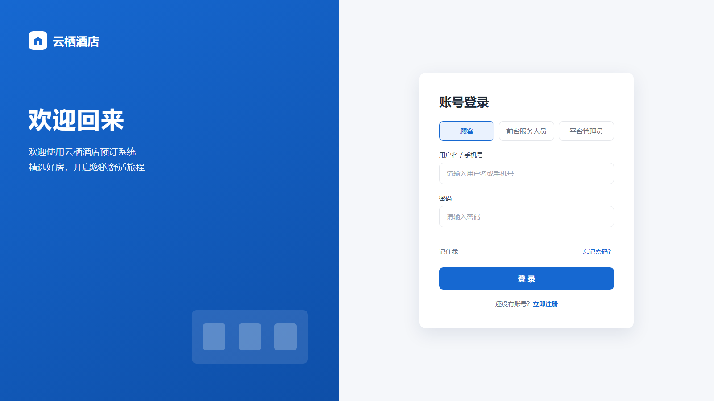
相关模块：搜索查询模块、酒店资源模块。顶部为导航栏，中部搜索区支持城市、入住/离店日期、房型条件组合，下方以卡片列表展示房型图片、评分、剩余房数、标签与价格，点击“立即预订”进入详情；无匹配时返回空结果提示。
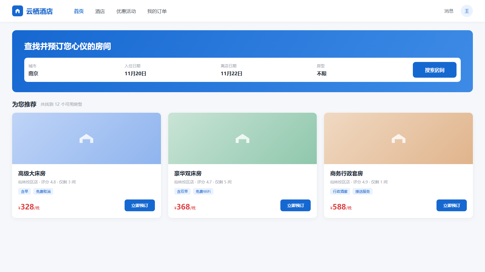
相关模块：订单支付模块、酒店资源模块。左侧为房型大图与缩略图，右侧展示房型介绍、床型、可住人数、设施标签、日期选择、房间数量与价格明细，并提示剩余库存；点击“立即预订”触发跨日库存校验与库存锁定，生成待支付订单。
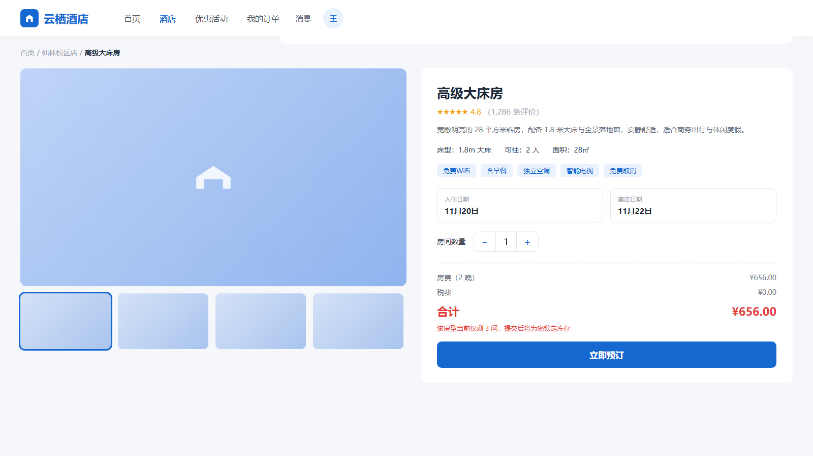
相关模块：订单支付模块。提供全部/待支付/已确认/已取消/已完成标签筛选；待支付订单以醒目卡片展示 15 分钟倒计时进度条、立即支付与取消按钮，超时自动取消并释放库存；已确认与已完成订单可查看详情或评价。
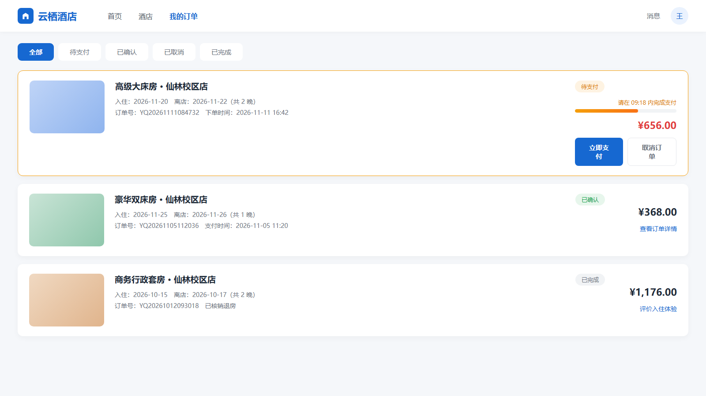
相关模块：酒店资源模块。左侧为后台导航，主体以表格管理各房型在不同日期的库存数量、每日价格与在售/停售状态，支持新增、批量导入、筛选与编辑，负数等非法输入将被拒绝，底部分页便于浏览。
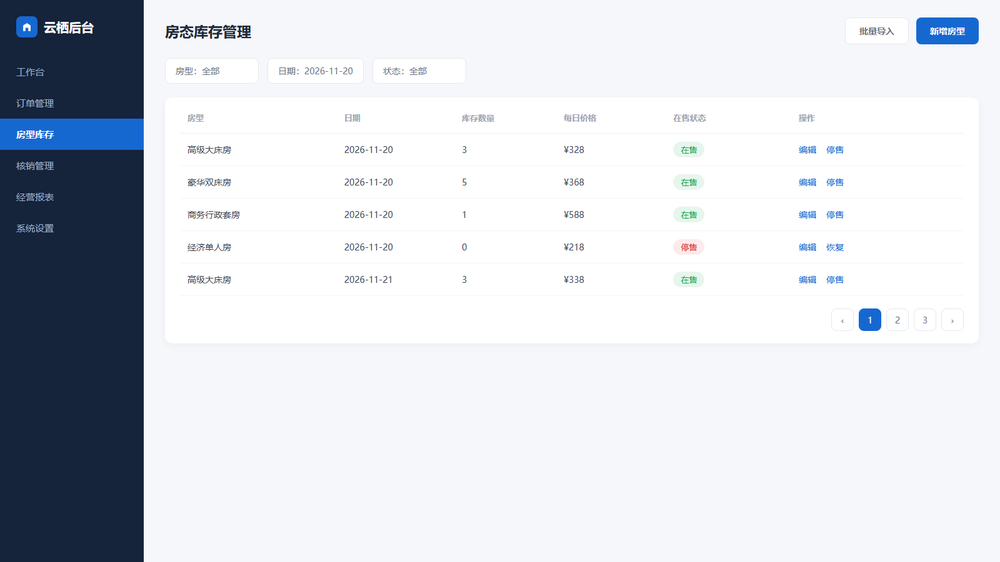
相关模块：核销与报表模块。支持扫描或手动输入核销码办理入住/退房，下方列出待核销订单及核销按钮；仅已支付且到达入住日期的订单可核销，未支付或已取消订单将被拒绝。
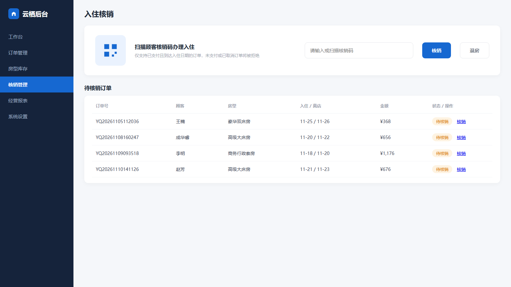
相关模块：核销与报表模块。顶部支持时间范围与门店筛选，统计卡片展示订单总数、入住率、营业额与取消率，并以折线图呈现营业额趋势、饼图呈现房型订单占比，下方为明细数据，辅助管理员经营决策。
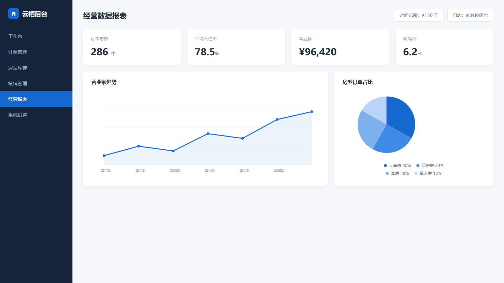
本次实验在多个环节使用大模型辅助软件设计，包括 PlantUML 代码生成、UI 界面生成、HTML/CSS 高保真还原以及报告撰写。我始终坚持先独立思考、确定结构与内容，再让工具生成初稿，最后人工审查与修改。以下按每次使用分别记录。
使用场景：在明确五个功能模块与核心类清单后，希望快速得到类图、组件图、用例图、活动图、时序图的 PlantUML 骨架代码，减少手写语法的工作量。
生成结果：大模型根据我给出的类、属性、方法与关系，生成了五张图的 .puml 初稿，包含继承、聚合、关联、依赖等关系语法。
优缺点分析：优点是语法结构生成快、覆盖的关系类型齐全，能快速搭建可运行的草稿；缺点是模型对多重性（如 1..*）、中文标签与分包布局的处理不一定符合预期，初次生成时还把输出文件名与标题混在一起，且自动布局存在少量虚线交叉。
修改优化：我将 @startuml 的标题改为独立的 title 关键字以固定输出文件名，核对并修正了每处多重性与关系箭头方向，补充了枚举类与业务服务类，重新渲染后逐张检查，最终得到图 2-1 至图 2-5 的结果。
使用场景：确定 7 个界面的信息架构后，希望快速看到高保真视觉效果与布局方向。
生成结果：文生图工具一次性给出了蓝白主题的界面图，导航、搜索区、卡片、表格、图表等整体布局与预期基本一致。
优缺点分析：优点是视觉风格统一、出图快，适合早期探索布局与配色；突出缺点是图中的中文小字大量出现错字、乱码与语义不通（如把“用户名”渲染成“用机朋名”、“密码”渲染成“深码”，日期与金额也出现错误），且生成的是位图，无法编辑、无法作为可交付的工程原型。
修改优化：判断文字问题无法靠重新生成可靠解决后，我没有直接采用，而是以其布局为参考，改用下面的 HTML/CSS 方案精确还原。
使用场景：需要文字 100% 准确、可在浏览器运行并可截图交付的高保真界面。
生成结果与做法：让大模型辅助编写各界面的 HTML 结构与 CSS 样式，使用统一的设计变量（主色 #1668D1、圆角、阴影、中文字体栈），图标与图表用内联 SVG 绘制，再用浏览器无头模式按 1600×900 批量截图。
优缺点分析：优点是文字完全可控、风格统一、可维护可复用，并天然就是可运行的原型；缺点是代码量较大，需要人工逐页核对数据、对齐与交互细节。
修改优化：我逐页校对了所有文案、日期、金额与状态，调整了卡片间距、表格列宽与图表配色，确认无误后导出图 3-1 至图 3-7。
使用场景：将设计过程整理为结构化报告。大模型用于辅助组织章节、润色表述与规范术语；优点是成稿快、格式规整，缺点是容易写成空泛套话。我据此补充了真实的设计原因、数据与具体修改过程，并删除了与本项目无关的泛化表述。
大模型如何辅助软件设计：我体会到大模型最适合承担“从 0 到草稿”的工作——快速生成语法骨架、探索布局方向、提供备选方案与整理文档，把人从重复性劳动中解放出来，专注于架构决策、业务规则与质量把关；但它不保证结果正确，深层业务边界、数据准确性与逻辑严谨性必须由人判断，正如本次中文乱码问题所暴露的，工具输出只能作为待审材料而非成品。
“人只做检查校对”的工作流设想：可以设计如下流水线——① 人先定义需求与验收标准；② 大模型生成 UML/UI/代码初稿；③ 自动校验工具做语法、命名、约束、数据一致性与可访问性检查并回传错误；④ 大模型根据错误自动修订并循环；⑤ 人仅在最终节点对照验收清单做确认与业务判断。要让它真正落地，需要把验收规则显式化、引入可自动执行的校验与回归测试，并保留人工对关键决策的一票否决权；在规则明确、可自动验证的环节，人确实可以只做检查校对，但在需求模糊或涉及复杂业务权衡时，人的主动设计仍不可替代。
实验过程使用 git 追踪主要修改，先提交 AI 辅助初稿，再提交人工修改与最终成果，以体现人工修改记录。主要提交如下：
| 提交 | 说明 |
|---|---|
| 5037d5d | 初始化实验二项目骨架与目录结构 |
| 22b071f | 基于 PlantUML 绘制五类 UML 图（AI 辅助初稿） |
| b0d1805 | 完成 7 个功能模块高保真 UI 界面（HTML 原型 + PNG） |
说明：本阶段交付高保真原型与设计文档，具体后端接口、真实支付网关对接等留作后续实验实现；界面数据为示例数据。